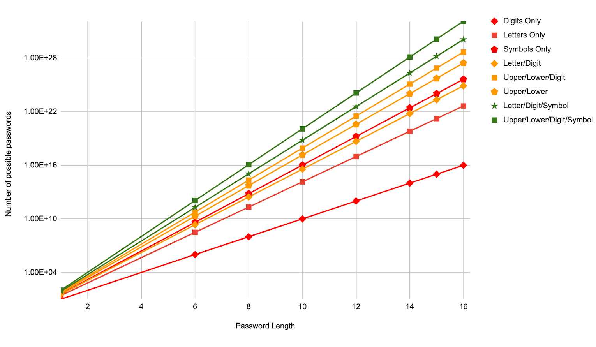

How the strength of a password is calculated is quite complicated. Put simply, the number of unique characters that youre able to enter into your password, to the power of the number of characters in your password is the number of possible passwords. Then, using the log2 function on this value is the number of bits of entropy. How entropy works, is 2^(entropy value) is the amount of guesses needed to guarantee your password being found.


Computer passwords are the easiest way for you to keep your accounts safe. They can range from taking milliseconds to crack, to millions of years, which is why choosing a good one is important. The best passwords contain the most characters, as well as including a symbol (@, &, etc.), a letter, an uppercase letter, and a number. A cool website to check your password strength can be found here.
Computer passwords are the easiest way for you to keep your accounts safe. They can range from taking milliseconds to crack, to millions of years, which is why choosing a good one is important. The best passwords contain the most characters, as well as including a symbol (@, &, etc.), a letter, an uppercase letter, and a number. A cool website to check your password strength can be found here.